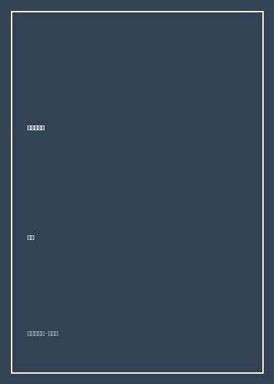

爱上单片机

总体观点
对于许多渴望亲手制作智能硬件却被传统工科教材高深数学公式劝退的爱好者而言，杜洋的《爱上单片机》是一股温暖清新的清流。作者摒弃了教科书中死板灌输汇编指令集、微机原理总线架构的教学套路，从一个充满好奇心的纯粹DIY玩家视角出发，以图文并茂的“电子积木”模式，带领读者一步步认识这颗只有指甲盖大小却能控制万物的微型计算机硅片。
全书贯穿着“在动手制作中学习”的极客精神。从认识电烙铁、面包板与阻容感分立元件，到亲手插接出点亮第一颗发光二极管的最小系统；从用蜂鸣器奏响简易电子乐曲，到编写C语言程序驱动LCD1602液晶屏显示字符。它向读者证明：硬件开发不是军工实验室的神秘黑魔法，而是一门充满探索乐趣、每个人都可以在自家书桌上亲手实现的造物手艺。
核心观点
-
1. 单片机本质是一颗拥有大脑与神经末梢的微型电脑
单片机内部集成了CPU、内存RAM、闪存ROM和输入输出IO端口，通过控制引脚高低电平即可指挥外部现实世界。
将单片机引脚想象成墙上的电灯开关：写一行代码`P1_0 = 0;`拉低电位，电路导通点亮LED灯，用软件代码操控物理世界。 -
2. 面包板是硬件初学者免焊接试错的最佳练兵场
在没有完全验证电路原理图之前，不要急着用电烙铁焊死洞洞板，利用免焊接面包板的内部连通插孔可以自由拔插修改。
在面包板上快速搭建由晶振、复位按键与滤波电容构成的单片机最小系统，十分钟内验证芯片烧录与运行状态。 -
3. 按键输入的硬件抖动与软件消抖智慧
机械按键在按下的瞬间金属弹片会产生数毫秒的高频物理回弹抖动，若不加处理会导致单片机误判为连续按下数十次。
在C语言按键扫描函数中加入经典的`delay_ms(10);`延时，跳过物理抖动窗口再二次检测电平，确保每次按键触发一次稳定操作。 -
4. 定时器与PWM脉宽调制：让数字引脚输出“模拟效果”
单片机引脚只有0和1两种状态，但通过定时器以极高频率开关引脚并调节高电平占比，即可实现LED呼吸灯与电机无级调速。
通过调整PWM占空比从0%平滑渐变到100%，让红色发光二极管在暗室中呈现出如同人类心跳呼吸般的柔和渐明渐暗动效。 -
5. 极客精神的精髓在于从零造出可用的生活小物件
学硬件最快乐的时刻不是考试拿满分，而是看到自己亲手焊出的桌面万年历或温湿度计在床头安静精准地运行。
结合DS1302时钟芯片与蜂鸣器，自己动手编程制作一个带贪睡功能的定制小闹钟，那种成就感将彻底点燃对工程技术的终身热爱。
全书思维导图 · 知识脉络树
全书结构
-
第一章 走进单片机的奇妙世界
揭开单片机神秘面纱，介绍常用经典STC89C52系列芯片特点，建立单片机控制物理世界的心智模型。
对比传统计算机庞大机箱与微型单片机芯片，阐明单片机在遥控器、电饭煲与玩具车中的无处不在。 -
第二章 极客武器库：必备工具与安全规范
认识数字万用表测量电压电阻、USB转串口下载器、面包板插接规范与电烙铁安全焊接技巧。
手把手演示如何用万用表二极管档测出发光二极管的正负极性，并计算适合5V供电的限流电阻阻值（470欧姆）。 -
第三章 点亮第一颗灯：单片机最小系统搭建
在面包板上搭建电源、时钟晶振与复位电路，编写第一个C语言程序点亮LED与实现跑马灯流动。
通过Keil开发环境编写流水灯逻辑，利用移位运算符`<<`让8颗彩灯如行云流水般依次轮转闪烁。 -
第四章 听觉与交互：按键控制与蜂鸣器奏乐
掌握独立按键扫描算法、软件延时消抖机制，利用定时器中断生成不同音频频率驱动无源蜂鸣器。
将简谱《两只老虎》的音符频率与拍子编码为数组，让单片机用蜂鸣器演奏出清脆明快的儿歌旋律。 -
第五章 视觉升级：数码管与字符液晶屏显示
掌握一位与多位数码管共阴共阳动态扫描原理，学习驱动工业标准字符液晶LCD1602显示自定义英文与符号。
编写LCD1602时序驱动代码，在屏幕第一行居中打印“Hello Geek!”，迈出构建独立人机交互界面的坚实步伐。 -
第六章 综合实战：打造你的第一件电子艺术品
整合DS18B20数字温度传感器与时钟模块，设计并焊接一块完整的便携式桌面数字环境检测仪。
完成从洞洞板飞线排布、元器件手工焊接到底层驱动调试的全流程，打造一台外观复古精巧的桌面时钟作品。